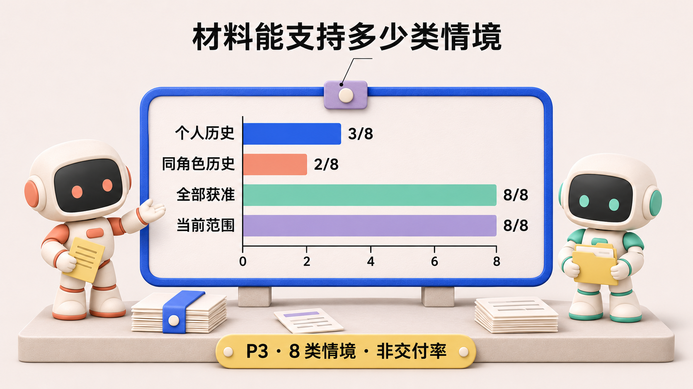

第 2 篇
一个 Agent 到底是谁：身份、角色、名字与上下文的四种边界
材质插画 / 数据对照 · 1/3

图 1：边界示意。四项分别回答识别、授权、执行与判断材料的问题，不能互相替代。
材质插画 / 数据对照 · 2/3
图 2：说明性情境。旧候选的通过报告不能遮蔽当前候选的失败记录；正文用 A、B 区分两个候选，筛选步骤是设计建议。
材质插画 / 数据对照 · 3/3

图 3：依据 P3 表 7 重绘，展示材料的可判定上限。个人历史有一个情境可以仅凭当前失败拒绝，因此“足以处置 3/8”不等于“两项必要事实齐全 3/8”。